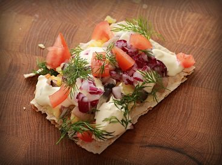

Surströmming

Surströmming - The Infamously Pungent Fermented Herring!
Despite its reputation for smelling bad——and, let's be honest here, it is
rotten fish in a can——surströmming is a delight when prepared properly.
Don't forget to open the can outside, though! One drop of the juice will
irreparably ruin a carpet.
(That wasn't an exaggeration. Really only open it outside.)
Ingredients
- Flat bread (tunnbröd if you can find it!)
- Salted butter
- Surströmming
- Freshly boiled potato
- Chopped onion
- Tomato
- Fresh dill
Steps
- Gut and de-bone the fish. Remember to save any roe!
- Butter bread with room temperature butter.
- Slice warm potatoes and put it on bread to melt butter.
- Sprinkle small pieces of the filleted herring on top of the potatoes.
- Top with onion, tomatoes, and fresh dill leaves.
- Optional: sour cream or Västerbotten cheese.
Can also be rolled into a taquito when using softer bread!